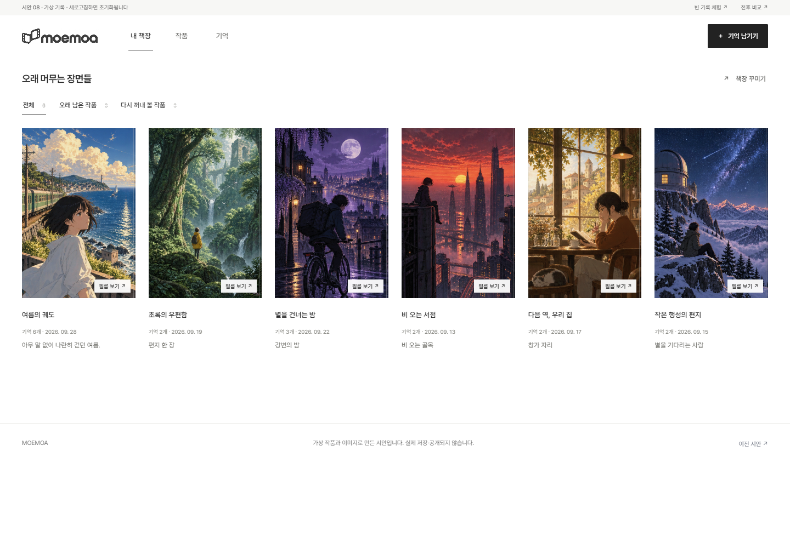
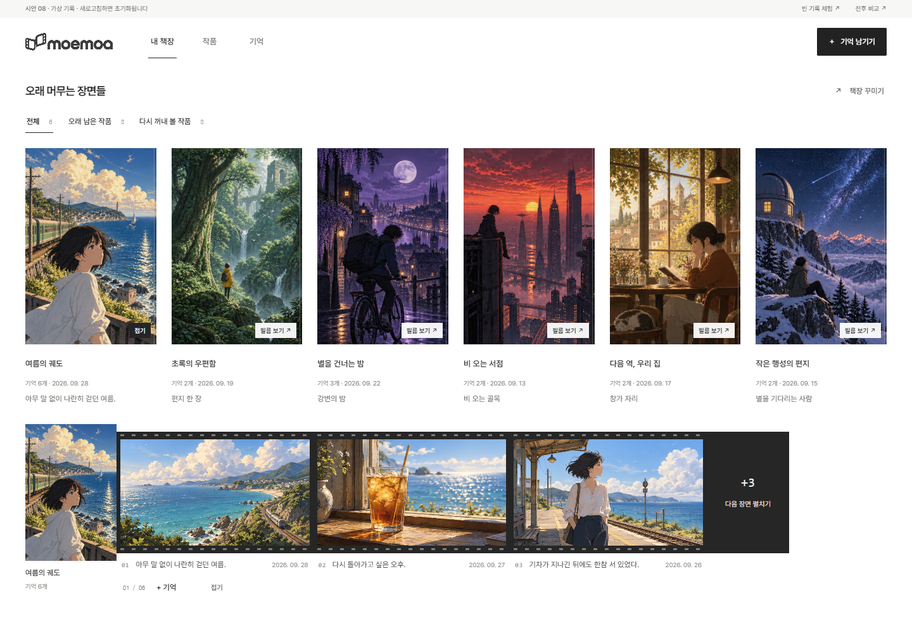
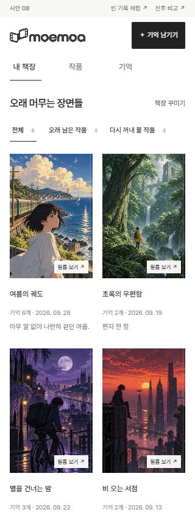
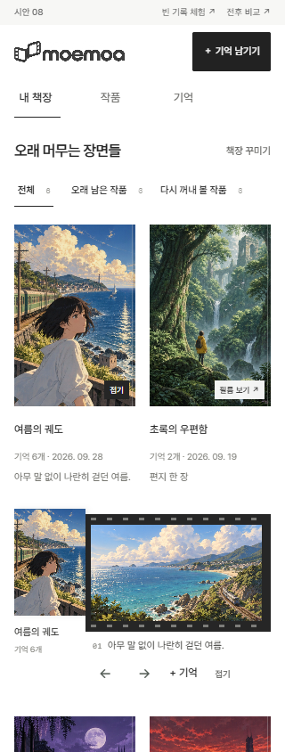

수정 직전 시안 07과 이번 시안 08입니다. 최초 서비스 디자인과의 비교가 아닙니다.
같은 가상 작품·기록, 같은 화면 크기로 촬영했습니다. 이미지를 누르면 원래 크기로 볼 수 있습니다.








무엇을, 왜 바꿨나요?
- 선반별 반복 목록 → 작은 선반 탭과 하나의 표지 그리드. 같은 작품이 중복되지 않고, 고른 작품들을 한눈에 볼 수 있습니다.
- 옆으로 커지는 표지 → 선택한 행 아래의 필름. 작품을 열어도 옆 표지의 위치와 크기는 바뀌지 않습니다.
- 목록 표지는 크게, 열린 필름의 커버는 작게. 모바일에서는 가로 장면 한 장을 온전히 볼 수 있는 폭을 확보했습니다.
- 히어로·소개 배너·자동으로 펼치는 대표 작품은 없습니다. 선반 이름, 개인 감상, 기록 날짜, 꾸미기는 유지했습니다.
별도 디자인 시안이며 실제 서비스에는 적용하지 않았습니다. 입력·편집은 브라우저 메모리에서만 유지되고 새로고침하면 초기화됩니다.